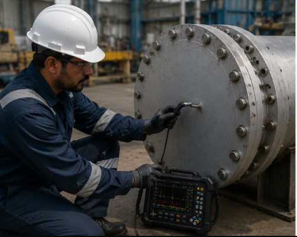
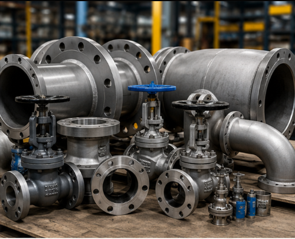

01
Technical Skills
Reliable people for complex site and project work.
A concept space for technical resources, NDT, inspection and supply systems, built with reactive movement, layered data and a little controlled engineering theatre.
Hover over each panel. The layout responds like a control surface, with motion tuned around the service it represents.
Reliable people for complex site and project work.

Inspection signals, asset integrity and operational confidence.

Consumables, alternatives and technical product matching.
Industrial work rarely moves in a straight line. DUKE connects the resource, inspection, supply and reporting layers so practical decisions can happen faster.